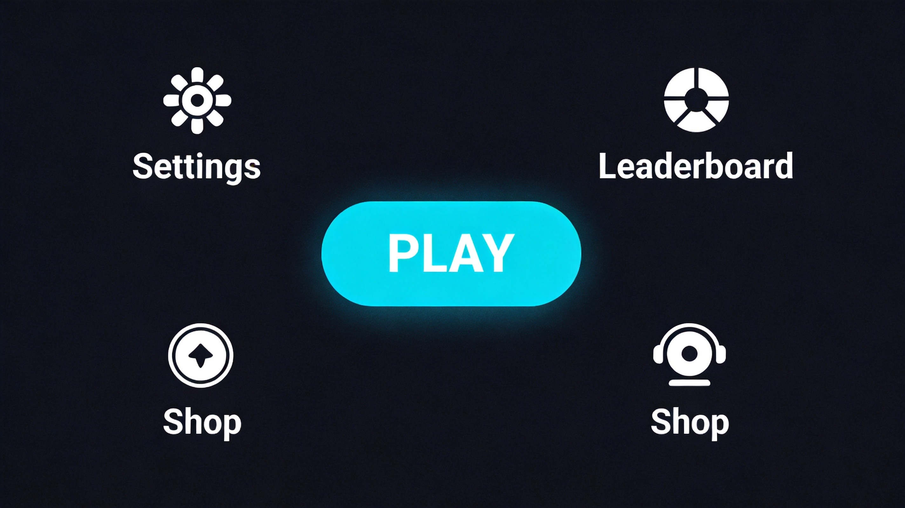
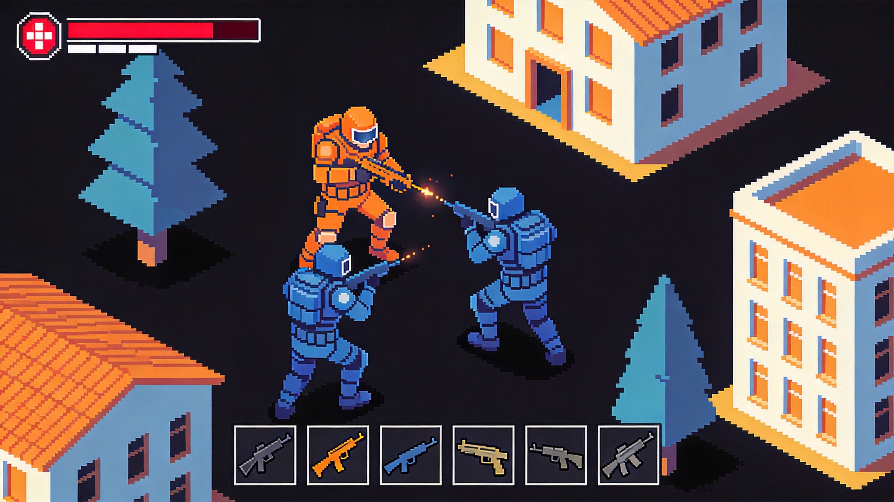
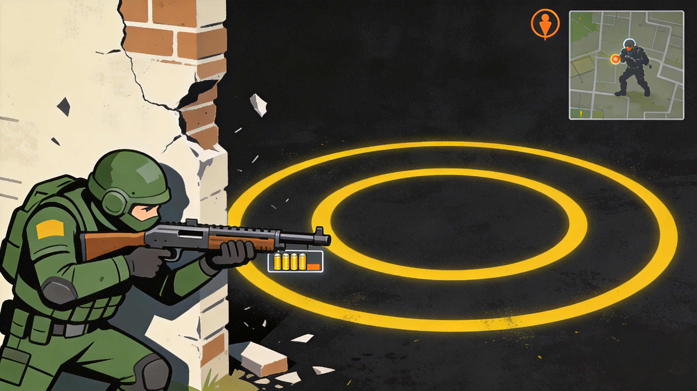

ZombsRoyale.io is a top-down battle royale game where you collect weapons, armor, and supplies while fighting to be the last survivor. Unlike traditional shooters, ZombsRoyale uses a 2D perspective that emphasizes positioning and resource management. This comprehensive guide covers landing strategies, weapon selection, and late-game tactics to help you win more matches.
🎯 Game Basics

Objective
Be the last player alive in a shrinking arena. Up to 100 players spawn on the map, and the playable area constantly shrinks, forcing confrontations. Collect weapons, armor, and medical supplies to survive.
The Shrinking Circle
- Blue Zone - Safe area. Standing outside causes gradual damage.
- White Zone - The playable area. Shrinks over time.
- Red Zone - Random artillery strikes. Avoid!
Health System
Players have 100 HP. Armor can add additional shield points. Medical supplies restore health. Health regenerates slowly when not taking damage.
🔫 Weapons & Equipment
Weapon Categories
Ranged Weapons
- Pistol - Starting weapon, moderate damage
- SMG - Fast fire rate, good for close range
- Assault Rifle - Balanced, versatile
- Sniper Rifle - High damage, long range, slow fire
- Rocket Launcher - Devastating area damage
Melee Weapons
- Baseball Bat - Basic melee
- Sword - Higher damage melee
Equipment
- Armor - Reduces damage taken
- Med Kit - Restores full health
- Bandages - Quick partial healing
- Grenades - Area damage
Always check your ammo before fights. Running out of ammo mid-combat is fatal. Carry backup weapons if possible.
🛬 Landing Strategy
Choosing Your Drop
Your landing spot sets the tone for the entire match. Consider:
- Loot Quality - Military areas have better weapons
- Population - High-loot areas attract more players
- Location - Central areas have shorter rotations
Best Landing Spots
- Town Center - Balanced loot, central location
- Military Base - Best loot, high competition
- Outskirts - Quiet start, limited loot
Landing Tips
Land quickly and loot fast. Don't spend too long searching for perfect gear. Get a weapon and move to a defensible position.
⚔️ Combat Tips
1. Use Cover
Always have something between you and enemy fire. Buildings, trees, and rocks provide essential cover in firefights.
2. Know Your Range
Each weapon has an optimal engagement range. Don't try to snipe with an SMG or spray at range with a sniper rifle.
3. Healing Priority
Always heal before entering danger zones. A full-health player has a significant advantage in any fight.
4. Audio Awareness
Footsteps, gunshots, and reloading all give away positions. Wear headphones and listen carefully.
5. Third-Party Wisely
When you see players fighting, wait for them to weaken each other, then strike. Third-partying is an effective strategy.
🗺️ Circle Strategy
Early Circles
Early circles are generous. Focus on looting and avoiding fights rather than racing to the zone.
Mid Circles
Start moving toward the center while prioritizing good positioning. This is when engagements become more frequent.
Late Circles
Position is everything in final circles. High ground and cover are crucial. Plan your moves 30 seconds before the circle closes.
Final Circle Tips
- Stay near the center of the next zone
- Use smoke grenades for repositioning
- Patience wins—let others fight
- Don't rush; smart play beats aggression

💎 Pro Tips
Play conservatively at first. Early deaths waste time. Focus on surviving to late game where skill matters more than loot.
Check your minimap constantly. It shows zone boundaries, nearby players, and gunshots. Use this information to plan.
Know when to fight and when to run. Not every engagement is worth taking. Sometimes the smart play is to avoid a fight.
Practice aiming in offline mode. ZombsRoyale offers practice modes. Hone your skills without pressure from other players.

❓ Frequently Asked Questions
What is the best weapon in ZombsRoyale.io?
There isn't a single best weapon. ARs are versatile for most situations. Shotguns dominate close range. Snipers excel at picking off distant targets. Adapt to what you find.
How do I deal with camping players?
Use grenades to flush them out. Circle around buildings to catch them off guard. Audio cues (reloading, footsteps) reveal their position.
Is armor worth it?
Absolutely! Armor significantly reduces damage taken. Always pick up armor if your current armor is damaged or you're unprotected.
How do I improve my aim?
Practice in offline mode. Focus on leading shots on moving targets. Lower sensitivity can help with precision aim.
Can I play with friends?
Yes! Create a squad and battle together against other teams. Team play requires coordination but can be very effective.
📝 Conclusion
ZombsRoyale.io rewards smart play, good positioning, and resource management. The strategies in this guide will help you make better decisions, survive longer, and win more matches. Remember: patience and positioning often beat aggressive play.
Ready to drop in? Jump into ZombsRoyale.io and start your journey to becoming a battle royale champion!
Last updated: January 20, 2024
Written by the iogameguide.com team